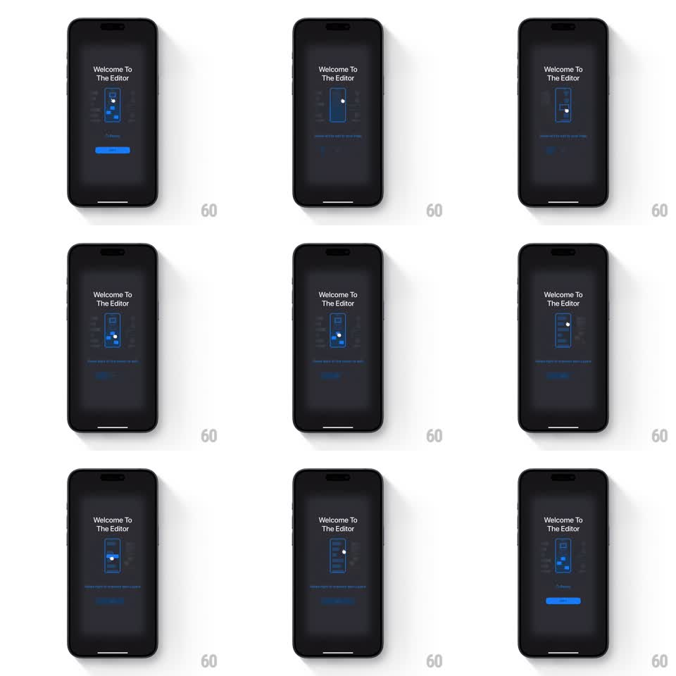

Media
Frame-by-frame

Rebuild this animation 1:1: an editor welcome screen teaching gestures - a dark screen with a blueprint-style phone outline where an animated touch dot demonstrates swipe gestures (drag up, drag down), with ghosted UI blocks inside the outline reacting to each pass.

Rebuild this animation 1:1: an editor welcome screen teaching gestures - a dark screen with a blueprint-style phone outline where an animated touch dot demonstrates swipe gestures (drag up, drag down), with ghosted UI blocks inside the outline reacting to each pass. ## Integration Integration: stack-agnostic spec - springs given as stiffness/damping, timed motions as duration + curve; map every value to your framework and animation library of choice. ## Scene Dark editor welcome: "Welcome To The Editor" title top, a neon-blue wireframe phone center (blueprint aesthetic: thin strokes, dashed guides, small blocks representing UI), a blue CTA button bottom. Inside the wireframe, faint UI blocks stack vertically. ## Motion spec Pattern: looping gesture tutorial. - A touch dot (small white circle with a soft halo) appears at the phone's lower third (fade in, 200ms). - The dot drags upward along the phone's center (600ms, ease-in-out); the ghosted UI blocks scroll with it 1:1, rubber-banding slightly at the end. - Dot fades out (150ms); blocks settle back with a spring (~260/20). - Variant loop: the dot demonstrates a downward drag on the next cycle (same timings, reversed). - Caption text under the phone crossfades with each gesture variant (200ms). - Full cycle ~3s, loops seamlessly. ## Calibration - The dot's halo (soft glow, ~2x dot radius) is what makes it readable over the blueprint lines. - Blocks respond 1:1 during the drag - no lag; the physics show only on release. ## Reduced motion Static diagram with an arrow annotation; no loop. ## Don't miss - Blueprint rendering: 1px strokes, one accent blue, dashed construction guides. - The wireframe phone never moves - only the dot and inner blocks.